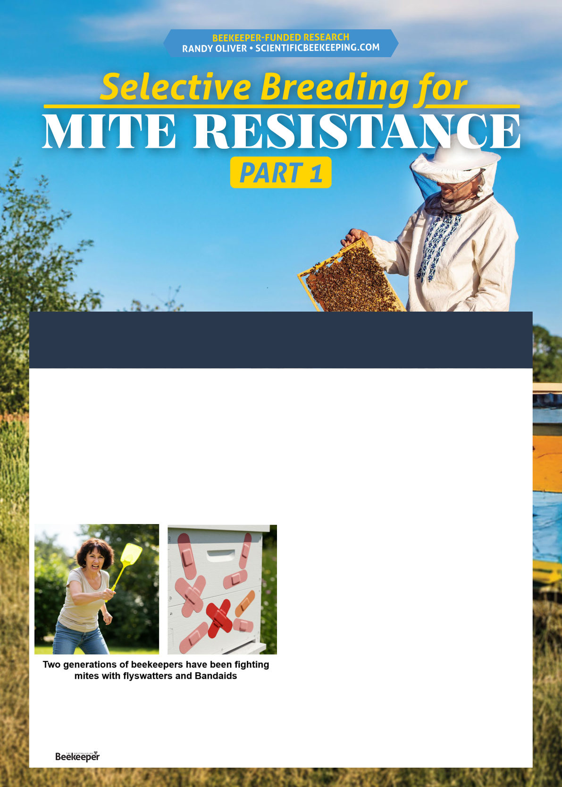

BEEKEEPER-FUNDED RESEARCH
RANDY OLIVER • SCIENTIFICBEEKEEPING.COM
I’ve selectively bred bees that were gentle, then immune to AFB, and then
resistant to the deadly tracheal mite. So when I saw my first varroa mite on a
sticky board in 1993, I thought “this is gonna be easy.” Boy was I wrong!
Colony Collapse Redux?
We’ve all heard about the high rate of colony losses this past
winter. This was hardly unexpected.1 As stated by Dr. Zachary
Lamas2:
The universal prevalence of [the amitraz] resistance geno-
type in all of these [mite] samples is strongly suggestive that
amitraz may have been ineffective at controlling these var-
roa populations. The removal of amitraz as a viable tool to
manage varroa will destabilize beekeeping operations until
a replacement miticide or management strategy arrives.
Due to amitraz’s loss of efficacy, researchers and startups are
feverishly trying to come up with new “treatments” for varroa
control. But the tragic irony of using any miticide to control
varroa is that doing so increases the selective pressure for mites
that are resistant to that chemical. Beekeepers have exhibited
their success at breeding mites resistant to a “silver bullet”
miticide time and again.
Keep in mind that any “treatments” are nothing but stopgap
measures (Figure 1).
A Side note on recent colony collapses
It wasn’t just varroa or amitraz resistance. Beginning last
September, our own operation got hit by a mysterious dwin-
dling — clearly not due to varroa/DWV (we were monitoring by
mite washes, and there were no sick brood, deformed wings,
and seldom any dead bees on the ground), we’ve never used
amitraz, and had no pesticide exposure. But it was like déjà
vu — the field signs were very similar to the “CCD” that we
observed when Nosema ceranae invaded during the 2000s —
the slow dwindling of the adult workers, leading to a shrinking
cluster over healthy brood (the well-described field sign of
collapse due to Nosema apis.3 So I pulled out the ‘scope, and
although there was scattered nosema present, it didn’t differ-
entiate between the healthy and dwindling colonies.
Despite our normal feeding of pollen sub and syrup, we help-
lessly watched what we expected to be strong colonies for
almond pollination dwindle to nothing.
The good news: Although the losses devastated us, there
were colonies in each yard that continued to thrive (apparently
resistant to the mysterious pathogen), and we are now rebuild-
ing our operation with our fingers crossed.
• Figure 1. There was nothing necessarily wrong with jumping to
the top of the IPM pyramid to control varroa when it first invaded,
but we needed to keep in mind that miticides were only short-
term stopgap measures to hold the fort until we bred bees that
could handle the mites themselves.
16 |
| Vol. 127 | No. 4